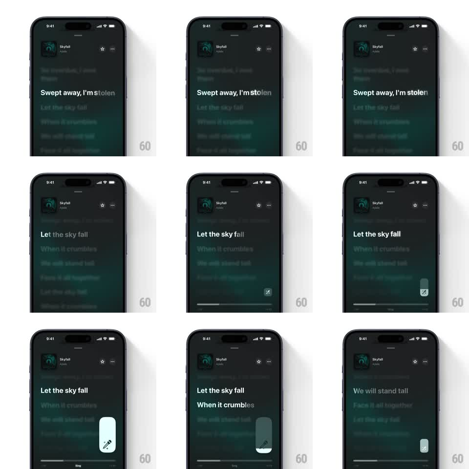

Media
Frame-by-frame

Rebuild this interaction 1:1: Apple Music Sing - a mic button at the bottom of the lyrics view expands into a vertical capsule slider that sets the vocal level, fills with a mint tint as you drag, and collapses back into the button when released or dismissed.

Rebuild this interaction 1:1: Apple Music Sing - a mic button at the bottom of the lyrics view expands into a vertical capsule slider that sets the vocal level, fills with a mint tint as you drag, and collapses back into the button when released or dismissed. ## Integration Integration: stack-agnostic spec - springs given as stiffness/damping, timed motions as duration + curve; map every value to your framework and animation library of choice. ## Scene Dark lyrics view tinted deep teal from the album art (Skyfall, Adele). Song header top, time-synced lyrics center (current line bright white, upcoming lines dimmed), progress bar at the bottom with a "Sing" label. A small round mic button sits at the bottom-right corner. ## Motion spec Pattern: icon button blooming into a vertical level slider. - Tap the mic button: it expands upward into a tall capsule (width stays, height grows ~4x, spring stiffness ~300, damping ~22) while the mic glyph stays pinned at the bottom of the capsule. - The capsule fills from the bottom with a pale mint tint representing the vocal level; dragging vertically moves the fill 1:1 with the finger. - The fill's top edge has a slight elastic lag on fast drags and settles (stiffness ~250, damping ~20). - Tap elsewhere or release after adjusting: the capsule collapses back into the small mic button (250ms, ease-in), glyph intact. - Lyrics keep scrolling and highlighting throughout - the slider never interrupts playback UI. ## Calibration - Expansion is vertical only; the button's width is the capsule's width. Growing sideways reads as a different control. - The mint fill must read clearly against the dark teal backdrop - keep it pale and solid, not translucent. ## Reduced motion Button crossfades to the full capsule (150ms) and back; no spring, no elastic fill lag. ## Don't miss - The mic glyph lives at the bottom of the capsule, not centered and not at the fill line. - The slider hugs the right edge of the screen where the button sat - it does not recenter.